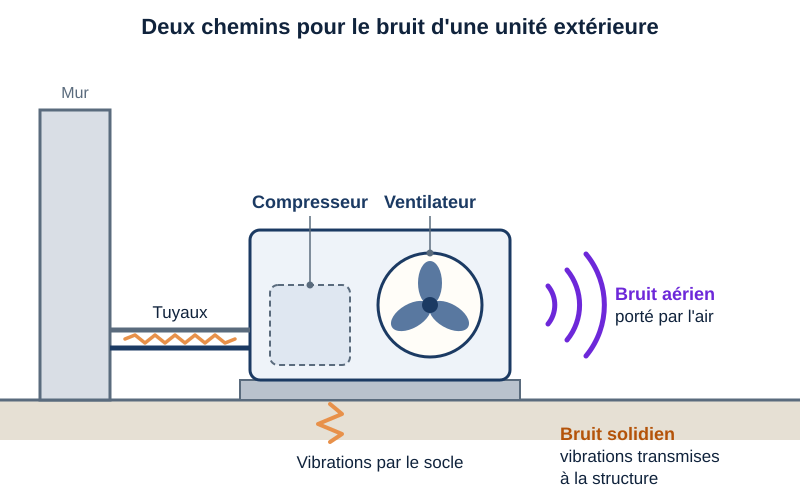
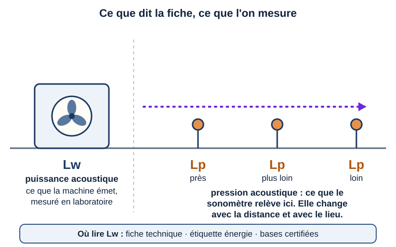
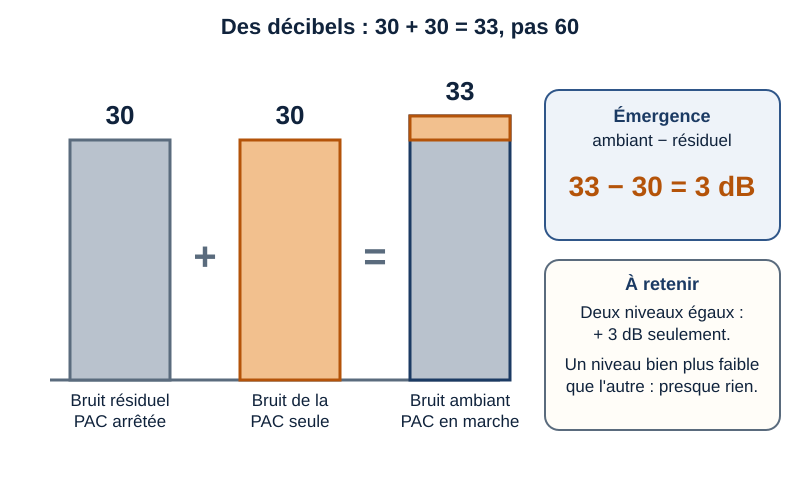
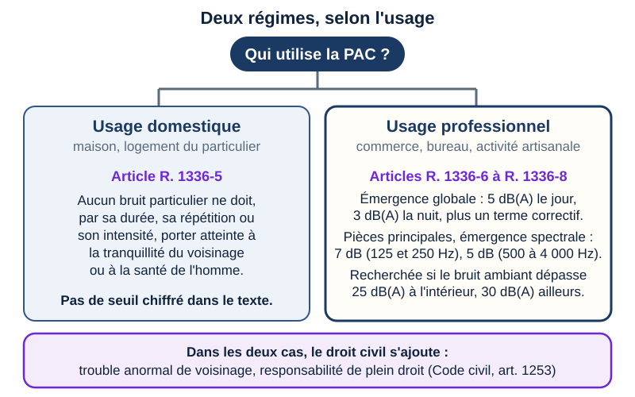
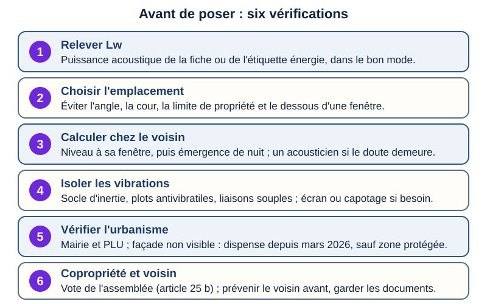

Acoustique · niveau BTS
PAC & voisinage — l'unité extérieure
Mini-station commentée · 8 écrans et 4 questions · environ 10 minutes
À la fin de la station, vous savez lire la puissance acoustique d'une fiche technique sans la confondre avec le niveau chez le voisin, estimer l'effet de la distance et de l'emplacement (mur, angle, cour), dire pourquoi la nuit est la période critique, distinguer les deux régimes du droit du bruit de voisinage, et lister ce qu'il faut vérifier avant de poser : urbanisme, copropriété, dialogue avec le voisin.
Référentiel : TP TECVC, REAC TP-00133 — compétences mobilisées : CP1 (plans d'implantation : choisir et reporter l'emplacement de l'unité extérieure), CP6 (chauffage et eau chaude sanitaire : pompe à chaleur air-eau) et CP9 (climatisation : unité extérieure d'un split).
Chaque écran peut être expliqué à voix haute : le bouton « Écouter » commente ce que vous voyez. Rien n'est dit qui ne soit aussi écrit.
Écran 1 sur 8
Un appareil, deux chemins pour le bruit
Une unité extérieure fait du bruit à deux endroits : le ventilateur, qui brasse l'air à travers la batterie, et le compresseur, logé dans le caisson.
Ce bruit voyage par deux chemins :
- par l'air, jusqu'au voisin : c'est le bruit aérien ;
- par la structure : les vibrations passent par le socle, les tuyaux et les fixations, puis un mur ou un plancher les rayonne à son tour : c'est le bruit solidien.
Un écran ou un capotage agit sur l'air ; il ne fait rien contre les vibrations. Le socle, les plots et les liaisons souples agissent sur la structure. « Toute transmission de vibrations est de nature à générer du bruit » (AFPAC, fiche n° 2).

Écran 2 sur 8
Lire la fiche technique : Lw n'est pas Lp
- Lw, la puissance acoustique (en dB(A)) caractérise ce que la source émet, indépendamment de son environnement. Mesurée en laboratoire, c'est la valeur qui permet de comparer directement les appareils entre eux.
- Lp, la pression acoustique (en dB(A)) est la grandeur perçue par l'oreille et relevée par le sonomètre. Pour une même machine, elle dépend de la distance et de l'environnement (AFPAC, fiche n° 1).
Où lire Lw. Sur la fiche technique du fabricant ; sur l'étiquette énergie, puisque, d'après le considérant 9 du règlement délégué (UE) n° 811/2013, l'information sur le niveau de puissance acoustique doit figurer sur les étiquettes des chauffages ; dans les bases de données de certification citées par le CidB (Eurovent Certita Certification, Keymark, Edibatec). La méthode de détermination de Lw pour les pompes à chaleur est l'objet de la norme NF EN 12102-1 (norme payante : seul son objet est cité ici).
Le piège. Comparer le Lw d'une fiche au niveau mesuré chez le voisin : ce ne sont pas les mêmes grandeurs. Si une fiche donne aussi une pression à une distance, lisez la distance et les conditions de mesure ; et relevez le mode de fonctionnement auquel la valeur se rapporte.

Écran 3 sur 8
La distance atténue : six décibels à chaque doublement
En champ libre (aucun obstacle, aucun mur qui renvoie le son), la puissance se répartit sur une surface qui croît comme le carré de la distance. Doubler la distance, c'est donc répartir la même puissance sur une surface quatre fois plus grande : le niveau perd 10·log 4, soit 6 dB. La fiche n° 1 de l'AFPAC en donne l'exemple : 54 dB(A) à 2 m, 48 à 4 m, 42 à 8 m.
Pour une unité posée au sol, la puissance se répartit sur une demi-sphère de surface 2π·r² ; la définition du niveau donne alors :
Lp = Lw − 20·log r − 8
Exemple d'exercice (valeur fictive, non tirée d'une fiche réelle) : Lw = 60 dB(A), fenêtre du voisin à 4 m. Lp ≈ 60 − 12 − 8 = 40 dB(A) devant la fenêtre ; à 8 m, ≈ 34 dB(A). C'est le niveau à l'extérieur : à l'intérieur, la façade l'atténue.

Écran 4 sur 8
L'emplacement : mur, angle, cour
Un mur, un angle, une cour renvoient le son. Dans le modèle simple (surfaces parfaitement réfléchissantes), la même puissance se répartit sur une part plus petite de l'espace : demi-espace au sol, puis quart contre un mur, puis huitième dans un angle. L'intensité double à chaque étape, soit + 3 dB (10·log 2).
La fiche n° 1 de l'AFPAC donne les mêmes écarts par rapport à une PAC posée au sol : + 3 dB(A) contre un mur, + 6 dB(A) dans un angle, + 9 dB(A) au moins dans une cour intérieure (« plus la cour est petite, plus la réflexion est importante »). Le même écart vaut pour le niveau reçu.
Suite de l'exemple d'exercice (Lw = 60 dB(A), fenêtre à 4 m) : 40 dB(A) au sol, 43 contre un mur, 46 dans un angle. Passer de l’angle au sol dégagé à distance égale fait gagner 6 dB(A), comme doubler la distance dans ce modèle.
Autres règles de la fiche : ne pas diriger les ventilations vers les voisins ; s'éloigner des limites de propriété ; ne pas poser la PAC sous une fenêtre, car les fenêtres isolent moins que les murs et peuvent être ouvertes. Un absorbant sur le mur derrière la machine retire au plus 2 dB(A) contre un mur, 4 dB(A) dans un angle.

Écran 5 sur 8
Les décibels ne s'additionnent pas : l'émergence
Deux niveaux L1 et L2 se combinent ainsi (définition logarithmique du décibel) :
L = 10·log ( 10L1/10 + 10L2/10 )
Deux niveaux égaux donnent donc 10·log 2 ≈ + 3 dB : 30 dB + 30 dB = 33 dB, pas 60 (exemple du CidB). Un niveau très inférieur à l'autre n'ajoute presque rien.
L'émergence est la différence entre le bruit ambiant (avec le bruit en cause) et le bruit résiduel (sans lui) : article R. 1336-7 du code de la santé publique.
Suite de l'exemple d'exercice. Résiduel de nuit de 25 dB(A), valeur indiquée par le CidB pour une zone calme. Avec la PAC à 40 dB(A) devant la fenêtre, le bruit ambiant vaut ≈ 40 dB(A) : émergence ≈ 15 dB. Dans l'angle (46 dB(A)) : ≈ 21 dB. Un niveau qui semble modeste émerge fortement dans un environnement très calme. Chez un particulier, ce calcul éclaire, mais la loi ne fixe pas de seuil chiffré (art. R. 1336-5) : les limites d'émergence (5 dB(A) le jour, 3 la nuit, plus un terme correctif) ne valent que pour un usage professionnel (écran 7).

Écran 6 sur 8
La nuit : la période critique
Pour une activité professionnelle, l'émergence limite est de 5 dB(A) de 7 h à 22 h et de 3 dB(A) de 22 h à 7 h, avant les termes correctifs liés à la durée d'apparition du bruit (article R. 1336-7).
La nuit, le bruit résiduel tombe alors que la machine continue de tourner : à niveau égal, l'émergence est plus forte, et la limite est plus stricte. C'est pourquoi une PAC acceptable de jour peut devenir un litige la nuit.
- Mode silencieux : s'il existe, relever dans la documentation du fabricant le niveau annoncé dans ce mode, et non celui du fonctionnement normal.
- Dégivrage : en hiver, l'unité givre et passe par un cycle de dégivrage ; demander au fabricant le bruit pendant ce cycle.

Écran 7 sur 8
Ce que dit le droit du bruit : deux régimes
La réponse du ministère à une question parlementaire (juin 2024) le confirme : les articles R. 1336-5 à R. 1336-9 du code de la santé publique s'appliquent aux pompes à chaleur, selon l'usage.
- Usage domestique : article R. 1336-5. Le texte ne fixe pas de seuil chiffré ; d'après le CidB, il n'est pas nécessaire de mesurer pour constater l'infraction, et elle ne dépend pas de l'heure.
- Usage professionnel : articles R. 1336-6 à R. 1336-8. L'émergence globale est limitée (5 dB(A) le jour, 3 dB(A) la nuit, plus un terme correctif) ; dans les pièces principales d'un logement, l'émergence spectrale est limitée à 7 dB dans les bandes d'octave de 125 et 250 Hz et à 5 dB de 500 à 4 000 Hz. Ces émergences ne sont recherchées que si le bruit ambiant dépasse 25 dB(A) à l'intérieur d'une pièce principale, 30 dB(A) ailleurs.
Mesurage : les modalités sont fixées par arrêté (article R. 1336-9) ; c'est l'arrêté du 5 décembre 2006, qui renvoie à la norme NF S 31-010 (norme payante). Suites : l'autorité administrative peut prendre les mesures de l'article L. 171-8 du code de l'environnement (article R. 1336-11).
Le civil s'ajoute : article 1253 du Code civil — le propriétaire, le locataire ou l'occupant à l'origine d'un trouble excédant les inconvénients normaux du voisinage est responsable de plein droit du dommage.

Écran 8 sur 8
Avant de poser : urbanisme, copropriété, prévenir le litige
- Urbanisme. Depuis les travaux engagés à compter de mars 2026, l'implantation en façade d'une PAC qui n'est visible ni du domaine public, ni d'une voie ouverte au public, ni d'un autre immeuble ayant une vue sur l'installation est dispensée de formalité (décret n° 2026-117 du 20 février 2026, article R*421-13 du code de l'urbanisme) — sauf dans les périmètres protégés (sites patrimoniaux remarquables, abords de monuments historiques, sites classés, réserves naturelles…). Sinon, modifier l'aspect extérieur reste soumis à déclaration préalable (article R*421-17). Dispensé de formalité ne veut pas dire dispensé des règles d'urbanisme (article L. 421-8) : le PLU de la commune se consulte.
- Copropriété. Les travaux qui affectent les parties communes ou l'aspect extérieur de l'immeuble demandent l'autorisation de l'assemblée générale (article 25 b de la loi du 10 juillet 1965) ; se reporter aussi au règlement de copropriété.
- Prévenir le litige. Installateur qualifié RGE, PAC certifiée NF, recommandations de l'AFPAC ; avertir le voisin avant la pose ; faire appel à un acousticien dès que le doute subsiste ; conserver le calcul et la fiche : ce sont les pièces qu'un juge lira (CidB).
- Un outil ? Aucun guide ni outil public de l'État ou de l'ADEME qui estime le niveau chez le voisin n'a été trouvé (recherche du 30/09/2026) ; en 2024, le ministère indiquait seulement que le Conseil national du bruit pourrait en proposer. L'outil existant est celui de l'AFPAC (association professionnelle), réservé aux professionnels inscrits : il calcule une émergence à partir de la puissance acoustique, de la configuration et de la distance au voisin.

Question 1 sur 4
Que représente la valeur Lw d'une fiche technique ?
Question 2 sur 4
Posée au sol, la PAC est déplacée dans un angle, à distance égale de la fenêtre. Le niveau reçu…
Question 3 sur 4
Bruit résiduel : 30 dB. PAC seule : 30 dB. Bruit ambiant, PAC en marche ?
Question 4 sur 4
La PAC d'une boulangerie gêne un voisin la nuit. Quel critère s'applique ?
Les correspondances de la station
- Les seuils (même sous-ligne) — voisinage et émergence : le détail des valeurs que cette station cite.
- Traiter le bruit (même sous-ligne) — plots antivibratiles, silencieux, écrans : ce qui agit sur les deux chemins du bruit.
- Le bruit en dB (même sous-ligne) — dB(A), niveaux, addition logarithmique : la base des écrans 3 à 5.
- La RE2020 (sous-ligne Thermique) — la pompe à chaleur est aussi un choix de performance énergétique : le bruit se règle avec elle, pas contre elle.
Les stations de la sous-ligne Acoustique sont produites ensemble : leurs liens fonctionnent dès qu'elles sont en ligne.